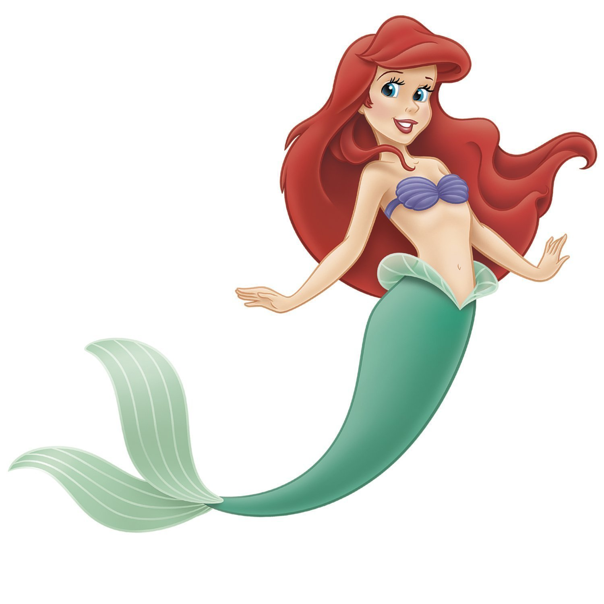

Ariel swimming happily around the ocean feeling free, fresh and fly
From The little mermaid to the Disney princess Ariel
1837 - The Danish writer Hans Christian Andersen wrote the sad story 'The Little Mermaid' about a mermaid being transformed to a human but ends up dying because she did not get a kiss from the prince.
1913 - A sculpture of The Little Mermaid was places at Langelinje Pie and is still one of the most visited turist attraction in Copenhagen (even though tourists get very dissapointed when they see how small she actually is)
1989 - The Little Mermaid with the character Ariel was animated. Disney changed the plot so it was no longer a sad story like the original.
1992 - The Little Mermaid was showed as a tv series for the first time.
2000 - The second movie The Little Mermaid II: Return to the Sea aired.